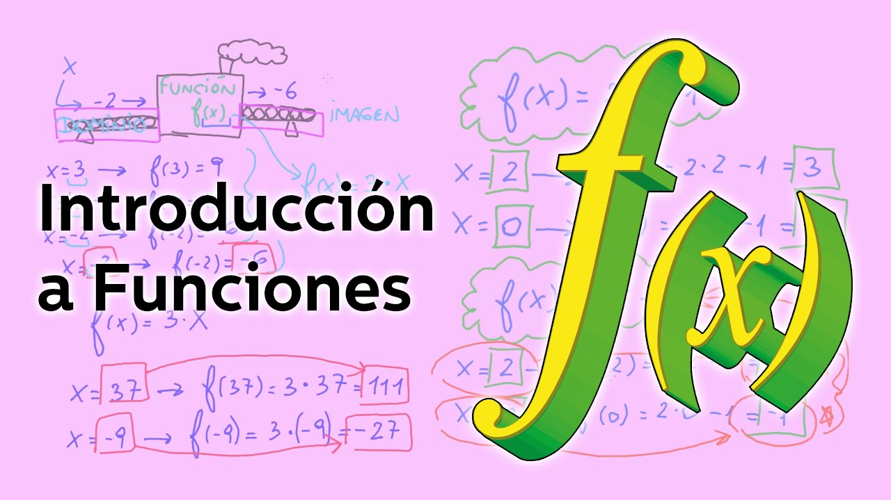
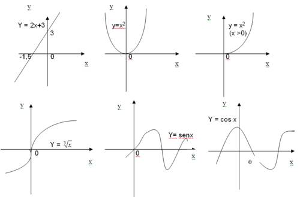

Definición
Las funciones matemáticas se definen como la expresión matemática de la relación existente entre dos variables o magnitudes. Dichas variables son simbolizadas a partir de las últimas letras del alfabeto, X e Y, y reciben respectivamente el nombre de dominio y codominio.
Dicha relación se expresa de tal modo que se busca la existencia de una igualdad entre ambos componentes analizados, y en general implica que para cada uno de los valores de X existe un único resultado de Y y viceversa (aunque existen clasificaciones de funciones que no cumplen con este requisito).
Asimismo, esta función permite la creación de una representación en forma de gráfica que a su vez permite la predicción del comportamiento de una de las variables a partir de la otra, así como posibles límites de esta relación o cambios de comportamiento de dicha variable.

Principales tipos de funciones matemáticas
A continuación os mostramos algunos de los principales tipos de funciones matemáticas, clasificadas en diferentes grupos según su comportamiento y el tipo de relación que se establece entre las variables X e Y.
1. Funciones algebraicas
Se entienden por funciones algebraicas el conjunto de tipos de funciones matemáticas caracterizadas por establecer una relación cuyos componentes son o bien monomios o bien polinomios, y cuya relación se obtiene a través de la realización de operaciones matemáticas relativamente simples: suma resta, multiplicación, división, potenciación o radicación (uso de raíces). Dentro de esta categoría podemos encontrar numerosas tipologías.
1.1 Funciones Explícitas
Se entienden por funciones explícitas todos aquellos tipos de funciones matemáticas cuya relación se puede obtener de forma directa, simplemente sustituyendo el dominio x por el valor que corresponda. Dicho de otra manera, es la función en que directamente encontramos una igualación entre el valor de y una relación matemática en la que influye el dominio x.
1.2. Funciones implícitas
Al contrario que en las anteriores, en las funciones implícitas la relación entre dominio y codominio no se establece de manera directa, siendo necesario realizar diversas transformaciones y operaciones matemáticas con el fin de encontrar la manera en que x e y se relacionan.
1.3. Funciones polinómicas
Las funciones polinómicas, en ocasiones entendidas como sinónimas de las algebraicas y en otras como una subclase de estas, integran el conjunto de tipos de funciones matemáticas en las que para obtener la relación entre dominio y codominio es necesario realizar diversas operaciones con polinomios de diverso grado.
Las funciones lineales o de primer grado son probablemente el tipo de función más sencilla de resolver y se encuentra entre las primeras que se aprenden. En ellas simplemente existe una relación simple en que un valor de x va a generar un valor de y, y su represantación gráfica es una recta que ha de cortar el eje de coordenadas por algún punto. La única variación va a ser la pendiente de dicha recta y el punto en que corte el eje, manteniéndose siempre el mismo tipo de relación.
Dentro de ellas podemos encontrar las funciones identidad, en las que directamente se da una identificación entre dominio y codominio de tal manera que ambos valores son siempre el mismo (y=x), las funciones lineales (en que únicamente observamos una variación de la pendiente, y=mx) y las funciones afines (en que podemos encontrar alteraciones en el punto de corte del eje de abscisas y la pendiente, y=mx+a).
Las funciones cuadráticas o segundo grado son aquellas que introducen un polinomio en que una única variable tiene un comportamiento no lineal a lo largo del tiempo (mejor dicho, en relación con el codominio). A partir de un límite concreto la función tiende a infinito en uno de los ejes. La representación gráfica se establece como una parábola, y matemáticamente se expresa como y=ax2+bx+c.
Las funciones constantes son aquellas en las que un único número real es el determinante de la relación entre dominio y codominio. Es decir, no existe una variación real en función del valor de ambos: el codominio siempre va a ir en función de una constante, no existiendo una variable de dominio que pueda introducir cambios. Simplemente, y=k.
1.4. Funciones racionales
Se denominan como funciones racionales al conjunto de funciones en las que el valor de la función se establece a partir de un cociente entre polinomios diferentes de cero. En dichas funciones el dominio incluirá todos los números excepto los que anulen el denominador de la división, los cuales no permitirían obtener un valor y.
En este tipo de funciones aparecen límites conocidos como asíntotas, los cuales precisamente serían aquellos valores en los que no habría un valor de dominio o codominio (es decir cuando y o x son igual a 0). En dichos límites, las representaciones gráficas tienden a infinito, sin tocar jamás dichos límites. Un ejemplo de este tipo de función: y= √ ax
1.5. Funciones irracionales o radicales
Reciben el nombre de funciones irracionales el conjunto de funciones en las cuales una función racional aparece introducida dentro de un radical o raíz (que no tiene porqué ser cuadrada, ya que es posible que sea cúbica o con otro exponente).
Para poder resolverla habrá que tener en cuenta que la existencia de dicha raíz nos impone ciertas restricciones, como por ejemplo el hecho de que los valores de x siempre van a tener que provocar que el resultado de la raíz sea positivo y mayor o igual a cero.
1.6. Funciones definidas a trozos
Este tipo de funciones son aquellas en las que el valor de y cambia el comportamiento de la función, existiendo dos intervalos con un comportamiento muy diferente en base al valor del dominio. Existirá un valor que no formará parte de este, el cual será el que valor a partir del cual el comportamiento de la función difiera.
2. Funciones trascendentes
Se denominan funciones trascendentes aquellas representaciones matemáticas de relaciones entre magnitudes que no pueden obtenerse a través de operaciones algebraicas, y para las que es necesario realizar un complejo proceso de cálculo con el fin de obtener su relación. Incluye principalmente aquellas funciones que requieren del uso de derivadas, integrales, logaritmos o que tienen un tipo de crecimiento que va creciendo o decreciendo de manera continuada.
2.1. Funciones exponenciales
Tal y como indica su nombre, las funciones exponenciales son el conjunto de funciones que establecen una relación entre dominio y codominio en la que se establece una relación de crecimiento a nivel exponencial, es decir que existe un crecimiento cada vez más acelerado. el valor de x es el exponente, es decir la manera en que el valor de la función va variando y creciendo a lo largo del tiempo. El ejemplo más sencillo: y=ax
2.2. Funciones logarítmicas
El logaritmo de cualquier número es aquel exponente el cual será necesario elevar la base empleada con el fin obtener el número concreto. Así pues las funciones logarítmicas son aquellas en las que estamos empleando como dominio el número que se ha de obtener con con una base concreta. Se trata del caso opuesto e inverso de la función exponencial.
El valor de x ha de ser siempre superior a cero y distinta de 1 (ya que cualquier logaritmo con base 1 es igual a cero). El crecimiento de la función es cada vez menor según va aumentando el valor de x. En este caso y=loga x
Atras